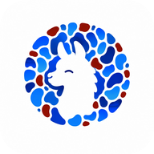

Inicia sesión para comenzar
Elige tu local para comenzar
—
—
—
Guarda una foto del stock actual con la fecha de hoy. Así queda el registro del día y se puede consultar o descargar después.
Cafés que no tienen Llamita. Se les manda con una hoja impresa.
Elige el producto que se vende en Fudo y qué insumos descuenta del inventario.
Se agregará a esta sede